#8738 Der Clou
Alternativ: The Sting
Auszeichnungen: 7 Oscars gewonnen für 3 Oscars nominiert
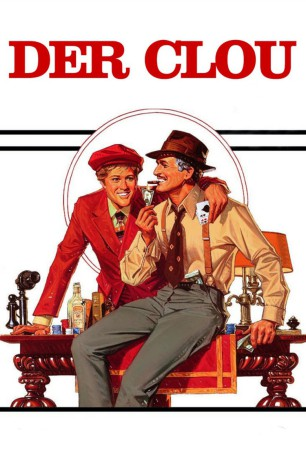 
 IMDB-Wertung: 8.3 / 10
IMDB-Wertung: 8.3 / 10  IMDB-TOP-Platzierung: 102
IMDB-TOP-Platzierung: 102  Metascore: 0
Metascore: 0 
Chicago um 1930. Kleingauner Johnny Hooker und sein schwarzer Partner erleichtern unwissentlich den Geldkurier des mächtigen Unterweltbosses Lonnegan. Der lässt Johnnys Partner ermorden. Johnny wendet sich an den abgehalfterten Gauner Gondorff. Sie fädeln einen raffinierten Racheplan ein, setzen auf Lonnegans Wettleidenschaft. Mit Kollegen, die von Lonnegan reingelegt worden sind, errichten sie ein falsches Wettbüro. Johnny wird zum Schein von Gondorff erschossen, Lonnegans Millionen wandern in ihre Hände.
Jahr: 1973
Dauer: 129 Minuten
FSK: 12
Land: USA Studio: Universal PicturesTonspuren:
Untertitel: Deutsch,
Auflösung: 1080p (1920x1040) Größe: 10649 MB
Genre: Drama, Komödie, Krimi
Regisseur: George Roy Hill
Drehbuch: David S. Ward
Soundtrack:
Darsteller:
 Paul Newman als Henry Gondorff
Paul Newman als Henry Gondorff Robert Redford als Johnny Hooker
Robert Redford als Johnny Hooker Robert Shaw als Doyle Lonnegan
Robert Shaw als Doyle Lonnegan Charles Durning als Lt. Wm. Snyder
Charles Durning als Lt. Wm. Snyder- 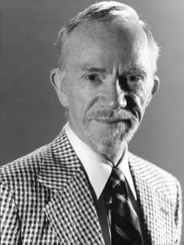 Ray Walston als J.J. Singleton
 Eileen Brennan als Billie
Eileen Brennan als Billie- 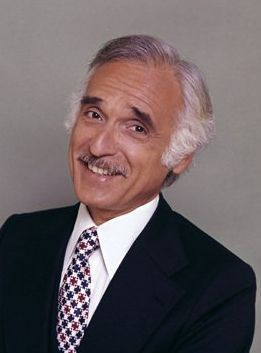 Harold Gould als Kid Twist
 Dana Elcar als F.B.I. Agent Polk
Dana Elcar als F.B.I. Agent Polk- Dimitra Arliss als Loretta
- Robert Earl Jones als Luther Coleman
- James Sloyan als Mottola
- 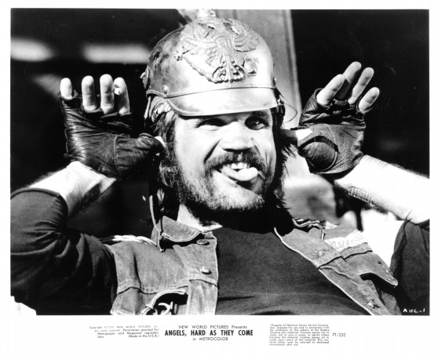 Charles Dierkop als Floyd - Bodyguard
- 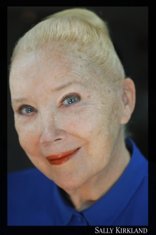 Sally Kirkland als Crystal
- Avon Long als Benny Garfield
- Arch Johnson als Combs
- 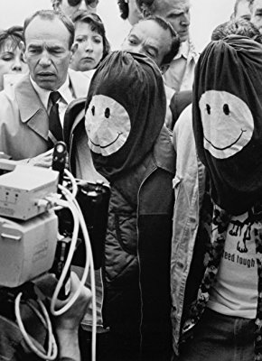 Brad Sullivan als Cole
- 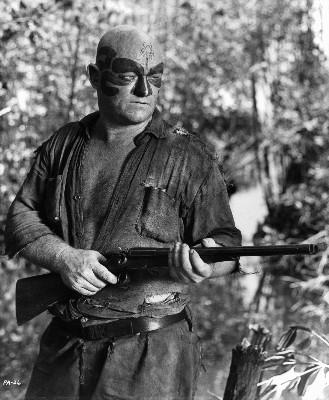 John Quade als Riley
- 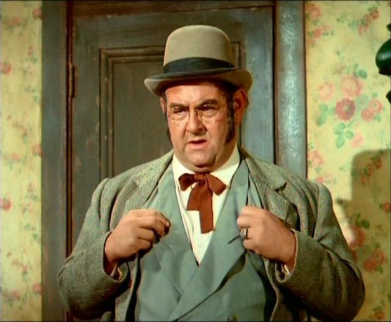 Larry D. Mann als Train Conductor
- Paulene Myers als Alva Coleman
- Joe Tornatore als Black Gloved Gunman
- Jack Collins als Duke Boudreau
- 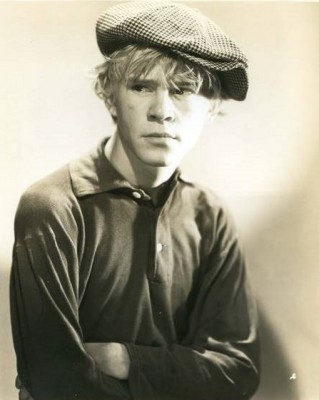 William 'Billy' Benedict als Roulette Dealer
- Robert Brubaker als Bill Clayton from Pittsburgh (uncredited)
 Kathleen Freeman als Kid Twist's Wife (uncredited)
Kathleen Freeman als Kid Twist's Wife (uncredited)- Susan French als Landlady (uncredited)
- 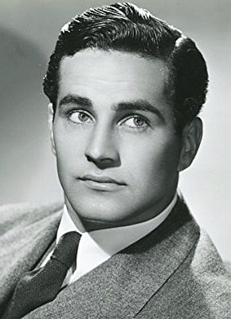 George Holmes als Gambler (uncredited)
- Byron Morrow als Mr. Jameson from Chicago (uncredited)
- 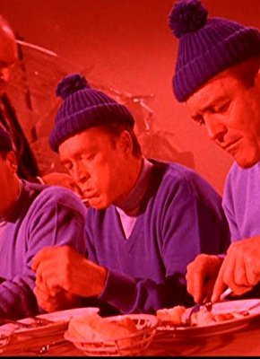 Guy Way als Gambling Den Boss (uncredited)
- John Heffernan als Eddie Niles
 Jack Kehoe als Erie Kid
Jack Kehoe als Erie Kid- Lee Paul als Bodyguard
- Ed Bakey als Granger
- Leonard Barr als Burlesque House Comedian
- Tom Spratley als Curly Jackson
- Kenneth O'Brien als Greer
- Ken Sansom als Western Union Executive
- Ta-Tanisha als Louise Coleman
- Patricia Bratcher als Manicurist (uncredited)
- Robert Buckingham als Gambler (uncredited)
- Peter Paul Eastman als Poker Player (uncredited)
- Sig Frohlich als Gambler (uncredited)
- Ralph Gambina als Gambler (uncredited)
- Clarke Gordon als Mr. Lombard (uncredited)
- Jack Griffin als Cabbie (uncredited)
- Sid Kane als Cashier #2 (uncredited)
- Bruce Kimball als Lacey the Bouncer (uncredited)
- Mike Lally als Gambler (uncredited)
- Alexander Lockwood als Landlord (uncredited)
- Chuck Morrell als FBI Agent Chuck (uncredited)
- Jessica Rains als Secretary (uncredited)
Datei: X:\1973\Clou, Der (1973, FSK12, 1920x1040).mkv seit 26.04.2018
Festplatte: HD 1971-1979
 Es gibt insgesamt 30 Filme in der Gruppe '1973'
Es gibt insgesamt 30 Filme in der Gruppe '1973'